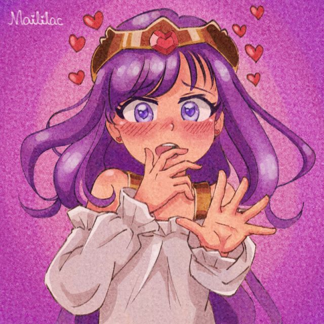

Apoie a Live! ✨
Escolha a opção ideal para você:
💡 Aviso: A doação mínima pelo Pixie é de R$ 6 por conta das taxas da plataforma. Para doações a partir de R$ 1, recomendamos usar o LivePix!

Escolha a opção ideal para você:
💡 Aviso: A doação mínima pelo Pixie é de R$ 6 por conta das taxas da plataforma. Para doações a partir de R$ 1, recomendamos usar o LivePix!